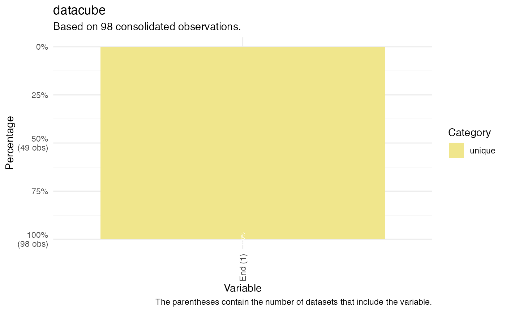

Compare categories in 'many' datacubes
Usage
compare_categories(
datacube,
dataset = "all",
key = "manyID",
variable = "all",
category = "all"
)Arguments
- datacube
A datacube from one of the many packages.
- dataset
A dataset in a datacube from one of the many packages. By default "all". That is, all datasets in the datacube are used. To select two or more datasets, please declare them as a vector.
- key
A variable key to join datasets. 'manyID' by default.
- variable
Would you like to focus on one, or more, specific variables present in one or more datasets in the 'many' datacube? By default "all". For multiple variables, please declare variable names as a vector.
- category
Would you like to focus on one specific code category? By default "all" are returned. Other options include "confirmed", "unique", "missing", "conflict", or "majority". For multiple variables, please declare categories as a vector.
Details
Confirmed values are the same in all datasets in datacube. Unique values appear once in datasets in datacube. Missing values are missing in all datasets in datacube. Conflict values are different in the same number of datasets in datacube. Majority values have the same value in multiple, but not all, datasets in datacube.
See also
Other compare_:
compare_dimensions(),
compare_missing(),
compare_overlap()
Examples
# \donttest{
compare_categories(emperors, key = "ID")
#> There were 151 matched observations by ID variable across datasets in datacube.
#> # A tibble: 103 × 35
#> ID `Wikipedia$Begin` `UNRV$Begin` `Britannica$Begin` `Begin (3)`
#> <chr> <mdate> <mdate> <mdate> <chr>
#> 1 Augustus -0026-01-16 -0027 -0031 conflict
#> 2 Tiberius 0014-09-18 0014 0014 majority
#> 3 Caligula 0037-03-18 0037 0037 majority
#> 4 Claudius 0041-01-25 0041 0041 majority
#> 5 Nero 0054-10-13 0054 0054 majority
#> 6 Galba 0068-06-08 0068 0068 majority
#> 7 Otho 0069-01-15 0069 0069-01 conflict
#> 8 Vitellius 0069-04-17 0069 0069-07 conflict
#> 9 Vespasian 0069-12-21 0069 0069 majority
#> 10 Titus 0079-06-24 0079 0079 majority
#> # ℹ 93 more rows
#> # ℹ 30 more variables: `Wikipedia$End` <mdate>, `UNRV$End` <mdate>,
#> # `Britannica$End` <mdate>, `End (3)` <chr>, `Wikipedia$FullName` <chr>,
#> # `UNRV$FullName` <chr>, `FullName (2)` <chr>, `Wikipedia$Birth` <mdate>,
#> # `UNRV$Birth` <mdate>, `Birth (2)` <chr>, `Wikipedia$Death` <mdate>,
#> # `UNRV$Death` <mdate>, `Death (2)` <chr>, `Wikipedia$CityBirth` <chr>,
#> # `CityBirth (1)` <chr>, `Wikipedia$ProvinceBirth` <chr>, …
compare_categories(datacube = emperors, dataset = c("wikipedia", "UNRV"),
key = "ID", variable = c("Beg", "End"), category = c("conflict", "unique"))
#> There were 0 matched observations by ID variable across datasets in datacube.
#> # A tibble: 98 × 3
#> ID `UNRV$End` `End (1)`
#> <chr> <mdate> <chr>
#> 1 Augustus -0014 unique
#> 2 Tiberius 0037 unique
#> 3 Caligula 0041 unique
#> 4 Claudius 0054 unique
#> 5 Nero 0068 unique
#> 6 Galba 0069 unique
#> 7 Otho 0069 unique
#> 8 Vitellius 0069 unique
#> 9 Vespasian 0079 unique
#> 10 Titus 0081 unique
#> # ℹ 88 more rows
plot(compare_categories(emperors, key = "ID"))
#> There were 151 matched observations by ID variable across datasets in datacube.
plot(compare_categories(datacube = emperors, dataset = c("wikipedia", "UNRV"),
key = "ID", variable = c("Beg", "End"), category = c("conflict", "unique")))
#> There were 0 matched observations by ID variable across datasets in datacube.

# }